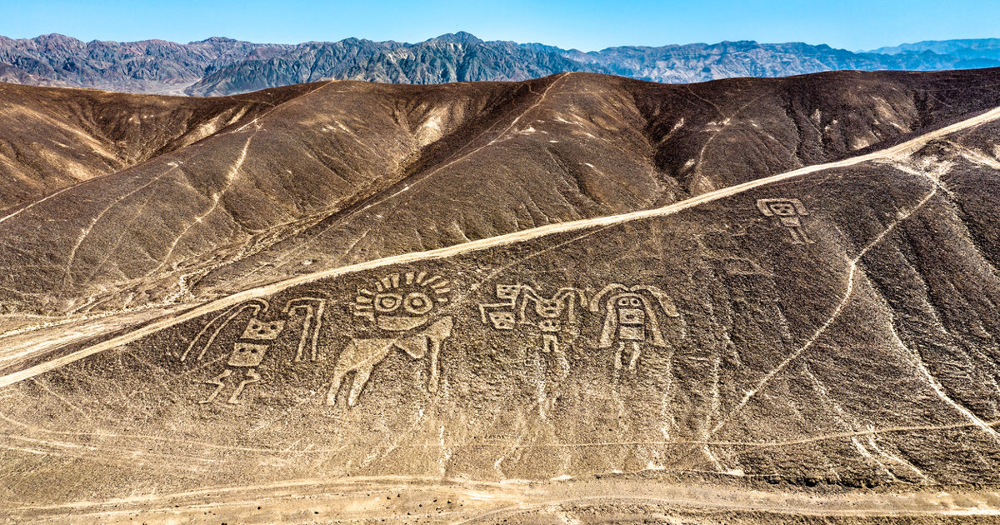
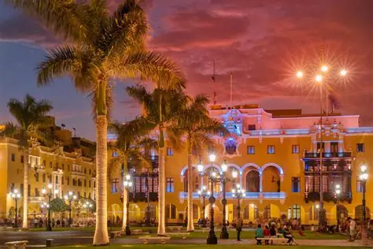
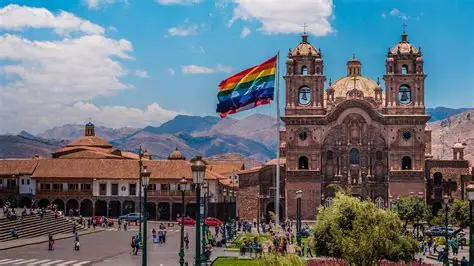
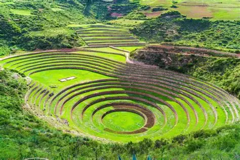
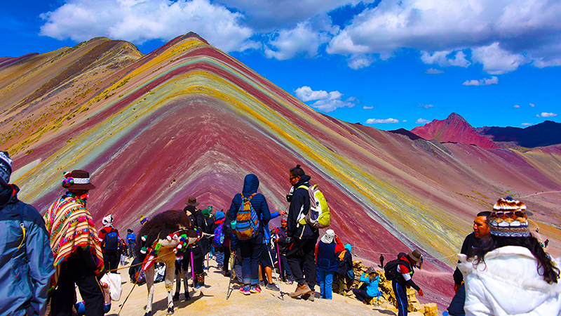
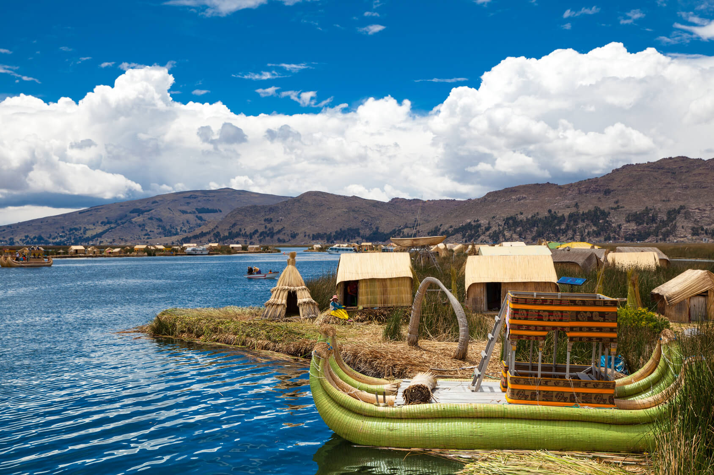

Guía de viaje - 7 días en Perú

Día 1 - Nazca
• Llegada a Nazca - comienzos de la tarde
• Para ver las Líneas de Nazca es necesario realizar un paseo en vuelo (aprox. 30 minutos), así será posible visualizar las principales figuras que son el colibrí, el mono, la araña y el cóndor, además de figuras geométricas como triángulos y espirales.
• Cena en el restaurante La Kasa Rústica.
Día 2 - Lima
• Vuelo de Nazca a Lima (1h de duración)
• Paseo por el Centro Histórico: Plaza Mayor, Catedral de Lima, Convento de San Francisco.
• Noche: cena en Miraflores.
• 🛏 Dormir en Lima.
Día 3 - Lima → Cusco
• Mañana: vuelo a Cusco (1h30 de duración).
• Tarde: caminata ligera para adaptarse a la altitud (3.400 m).
• Plaza de Armas• Templo Qorikancha• Noche: Cena en el restaurante Chull's Peruvian Cuisine & Craft Beer.
• 🛏 Dormir en Cusco.
Día 4 - Vale Sagrado de los Incas
• Excursión de 1 día:
• Pisac (ruinas y mercado artesanal)• Ollantaytambo (fortaleza y estación de tren para Machu Picchu)• Parada en Chinchero para ver artesanías y tejidos.
• Noche: tomar tren de Ollantaytambo a Aguas Calientes.
• 🛏 Dormir en Aguas Calientes.
Día 5 - Machu Picchu
• Mañana: subir temprano a Machu Picchu (autobús o sendero corto).
• Visita guiada + tiempo libre para explorar.
• Tarde: tren de regreso a Cusco.
• 🛏 Dormir en Cusco.

Día 6 - Montaña de los Siete Colores
• Opción 1: Sendero hasta la Montaña de los 7 Colores (todo el día, requiere preparación física).
• Opción 2: Caminata hasta la Laguna Humantay (más corta, pero también en alta altitud).
• Noche: descanso en Cusco.
• 🛏 Dormir en Cusco.
Día 7 - Cusco → Lago Titicaca (Puno)
• Mañana: viaje en autobús turístico hacia Puno (7-8h, con paradas en puntos históricos en el camino).
• Noche: llegada y descanso.
• 🛏 Dormir en Puno.
